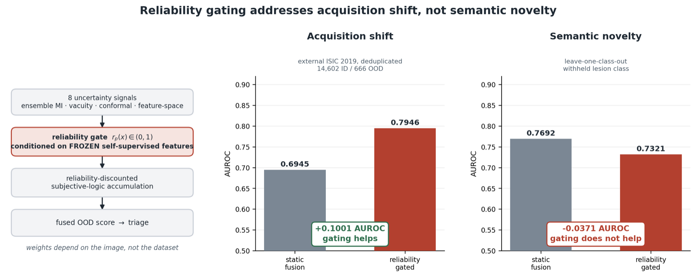

Input-conditional uncertainty fusion for skin lesion screening
Biomedical Signal Processing and Control (Elsevier)

Abstract
Deep classifiers for skin lesion diagnosis do not abstain on inputs from outside their training distribution: they return a confident label, and the failure is silent. Fusing several uncertainty signals is the usual remedy, but the fusions in common use apply one weight vector to every image. We fuse eight signals, spanning ensemble disagreement, evidential vacuity, conformal set size and five feature-space detectors, with a gate that emits a per-image reliability for each and accumulates them as reliability-discounted subjective-logic evidence. The gate is conditioned on frozen self-supervised features rather than the task backbone, and the external archive is filtered against the training corpus by identifier and pixel hashing. On the 14,602 in-distribution and 666 out-of-distribution images left after removing 10,015 training-derived ones, gated fusion reaches 0.7946 in area under the receiver operating characteristic curve (AUROC) under acquisition shift, against 0.6945 for static fusion of identical signals, every comparison significant after multiplicity correction. The rule reduces to static fusion under constant reliabilities, so that margin is attributable to input-conditionality alone, and frozen-encoder conditioning supplies 0.0534 of it. A leave-one-class-out protocol then tests the boundary. Against a lesion class withheld from calibration the advantage disappears, the gate falling 0.0371 AUROC below static fusion, while cross-validation over exposed outliers overstates unseen-class performance by 0.1975. Reliability gating addresses acquisition shift; it is not a novelty detector, and the two regimes should not be reported together.
Under review. The full manuscript is available on request: sayeb.cse@gmail.com.
Cite
@article{rayhan2026bspc,
title = {Input-conditional uncertainty fusion for skin lesion screening},
author = {Rayhan, Md Abu Sayeb and Hiya, Hustagna and Dhar, Ajoy Shutra},
journal = {Biomedical Signal Processing and Control (Elsevier)},
note = {Under review},
year = {2026}
}